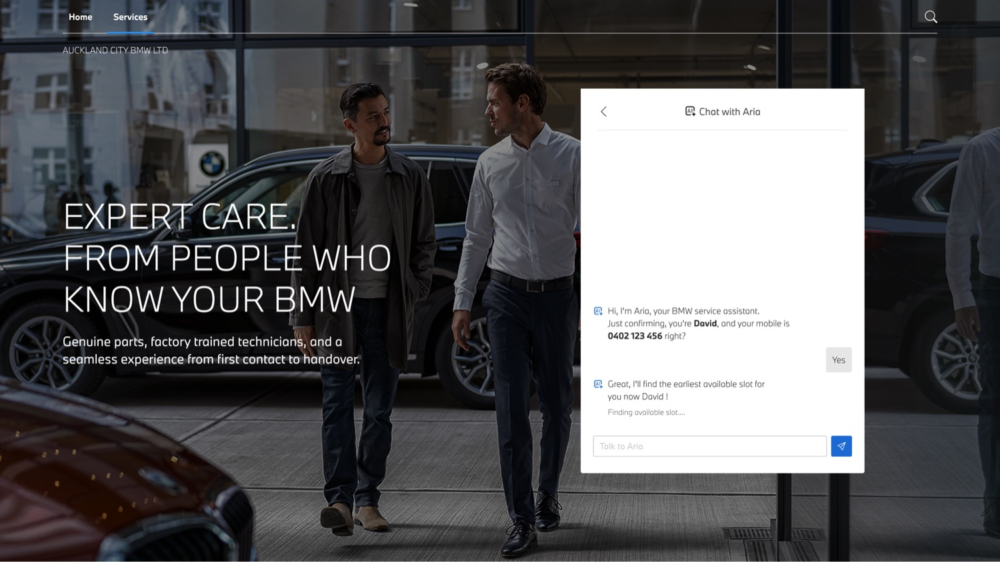
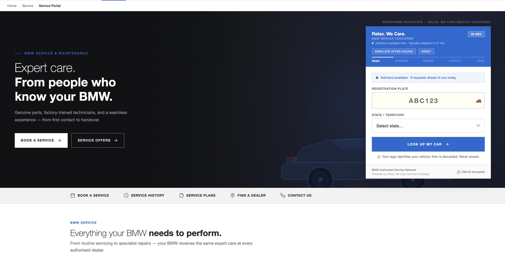
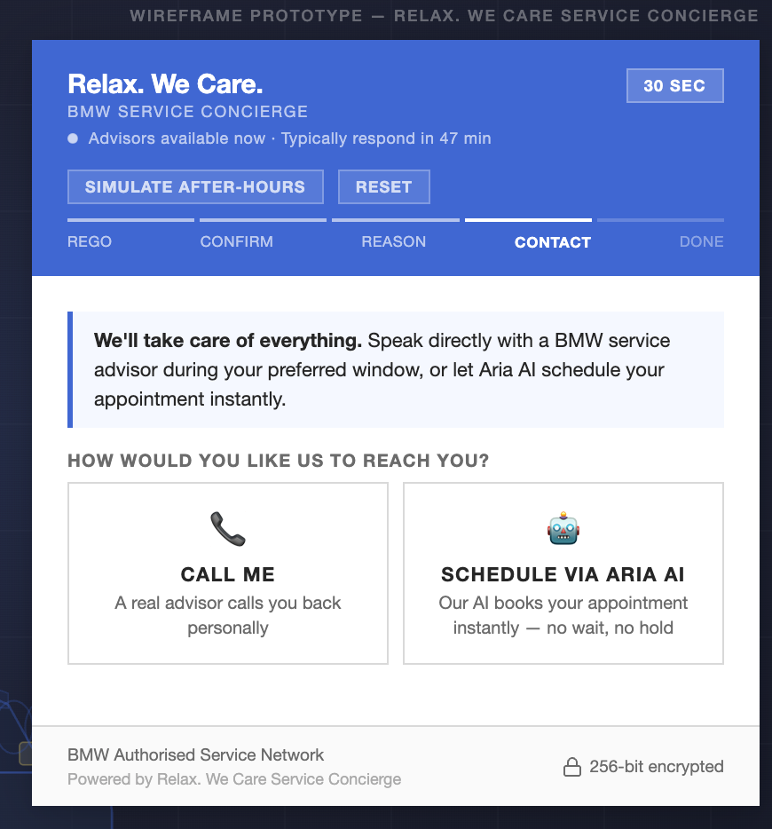
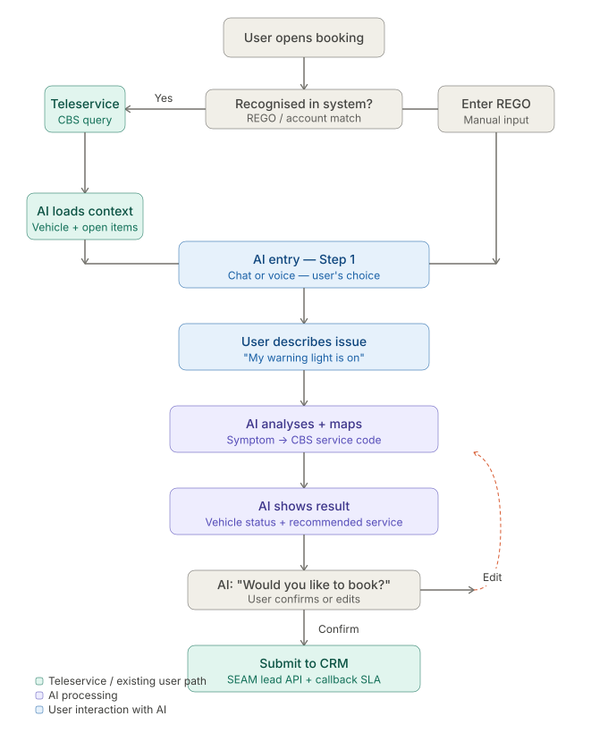
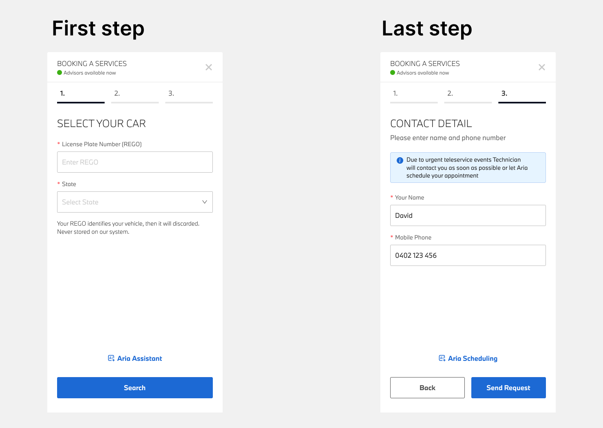
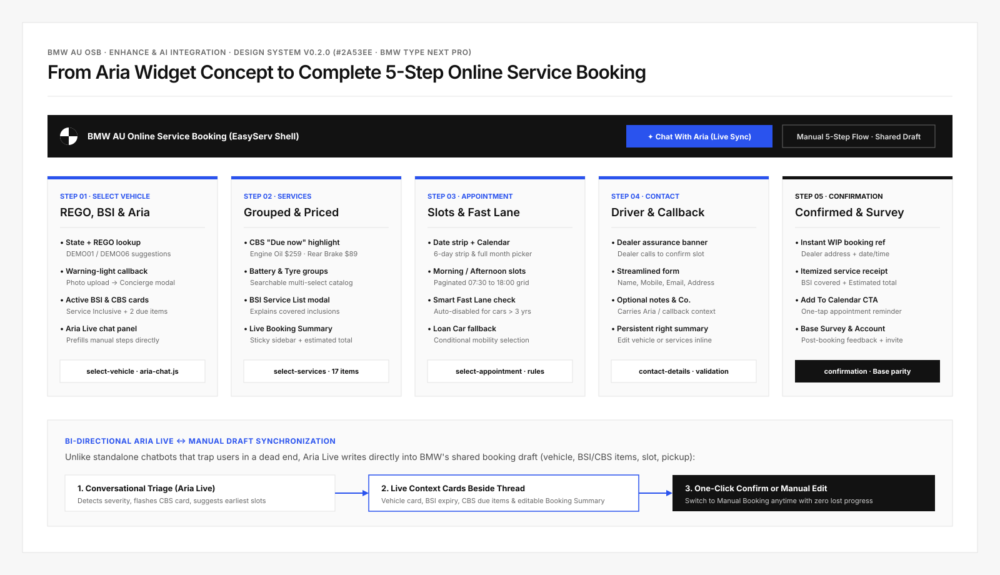

Automotive AI · Complete OSB & Conversational UI
Putting AI where drivers actually need speed, from widget to full OSB.
What began as a visual redesign and Aria AI widget concept evolved into a complete 5-step BMW Australia Online Service Booking (Enhance & AI Integration) web application rebuilt on the BMW EasyServ Design System. It unifies manual booking (REGO lookup, BSI/CBS services, Fast Lane age rules, Loan Car, Confirmation + Survey) with a live Aria AI assistant that prefills the booking draft seamlessly.

Vehicle, Services, Appointment, Contact, and Confirmation with Survey & Account dialogs.
Conversational chat, voice, and warning-light photos prefill the shared booking draft.
Live REGO lookup, Due Now telemetry pricing, and automatic >3-year Fast Lane checks.
01 · Context
Connecting vehicle telemetry, AI triage, and end-to-end service booking.
BMW Online Service Booking (OSB) connects vehicle owners with dealership workshops across Australia and New Zealand. Under the hood, Condition Based Service (CBS), BMW Service Inclusive (BSI), and Teleservice already detect urgent maintenance needs such as engine oil intervals or worn brakes.
Our work spanned two connected phases: first auditing BMW's internal wireframe and crafting the Aria AI conversational widget concept, then rebuilding the complete 5-step BMW Australia OSB (Enhance & AI Integration) on the shared BMW Design System v0.2.0 (#2A53EE primary, BMW Type Next Pro typography).
AI Widget + Full 5-Step OSB
BMW EasyServ v0.2.0
BSI, CBS, Teleservice & SEAM
Figma UI + Live 5-Step HTML App
02 · Problem
A wireframe solved for technicians, but fragmented for drivers.
Pulling CBS/Teleservice data into dealership leads solved discovery work for advisors. Yet auditing the live Base OSB and initial wireframe revealed three high-friction driver issues.
AI placed at the final step
Introducing AI voice interaction at confirmation created a channel mismatch: drivers who already completed manual fields want instant submit, not a new conversation.
Flat lists & hidden eligibility rules
The legacy flat service list hid which CBS items were Due Now versus covered by BSI, while Fast Lane vehicle-age eligibility (>3 years) and warning-light emergencies lacked guided paths.
Disconnected chatbot dead ends
Standalone widgets often trap users inside a chat bubble without syncing into manual booking steps or letting drivers upload warning-light and body damage photos.
03 · My role
AI UX critique, full OSB visual design, and interactive HTML build.
Wireframe Audit & AI Repositioning
Challenged the Step 3 AI placement with behavioral benchmarks from ChatGPT and Gemini, introducing Aria at Step 1 while keeping brief-aligned scheduling at Step 3.
Complete 5-Step OSB Design
Designed and rebuilt all five BMW AU OSB modules (Vehicle, Services, Appointment, Contact, Confirmation + Base Survey & Account dialogs) on BMW Design System tokens.
Interactive Dual-Mode Prototype
Engineered the live clickable Enhance & AI Integration web app where Aria Live chat writes directly to the shared manual booking draft with zero lost progress.
04 · Approach
Audit the wireframe, design the widget, scale into the full system.
Starting from customer urgency scenarios let us validate Aria's conversational behavior first, then systematically fold every business rule into BMW's full multi-step design system.
Wireframe Audit
Mapped technician wins vs driver friction in BMW's initial 3-step wireframe.
Persona & AI Study
Benchmarked ChatGPT and Gemini chat/voice flows for hurried vs methodical drivers.
Widget Concept
Designed Aria Chatbox, Voice, and damage photo upload for Step 1 fast entry.
Design System Port
Rebuilt the AU proposal cleanly on BMW Design System v0.2.0 (#2A53EE, BMW Type Next Pro).
5-Step Logic
Added BSI/CBS grouped pricing, warning-light callback modal, and >3-year Fast Lane rules.
Full HTML Parity
Unified Aria Live chat with manual draft sync plus Base confirmation survey & account dialogs.


05 · AI Interaction & Complete OSB Architecture
One shared booking draft across Aria Live and 5 manual steps.
Instead of siloing Aria as a novelty widget, the upgraded BMW AU OSB embeds a persistent top-bar switcher ('Chat With Aria' vs 'Manual Booking'). Everything Aria captures (vehicle DEMO01/DEMO06, BSI/CBS items, slot, pickup preference) writes straight into the shared booking draft so drivers can review or edit in the manual steps at any moment.
| Dimension | Initial Wireframe | Widget Concept + Complete AU OSB |
|---|---|---|
| AI Entry & Sync | Forced at final confirmation step with no shared state. | Step 1 fast lane + persistent 'Chat With Aria' toggle syncing directly into the 5-step manual draft. |
| Vehicle & Emergencies | Basic plate search with no warning-light triage. | State + REGO autocomplete (DEMO01/DEMO06), manual fallback, and Warning-Light Diagnosis callback modal with photo upload. |
| Services & Pricing | Flat ungrouped list hiding package coverage. | BSI Service Inclusive modal + CBS 'Due now', Battery, and Tyre groups with live sticky Booking Summary total. |
| Appointment & Rules | Static date strip with no mobility guidance. | Date strip + month calendar, Morning/Afternoon slots, automatic Fast Lane (>3 yr age check), and Loan Car selector. |
| Post-Booking Loop | Simple confirmation text. | Itemized WIP confirmation, Add To Calendar, plus integrated Base customer satisfaction survey & BMW Account invite. |
How Aria operates between driver and dealership SEAM
1. Identify Vehicle
Driver enters or speaks plate number; Aria loads BMW model, VIN, odometer, active BSI expiry, and urgent Teleservice alerts.
2. Triage & Translate
Natural language symptoms or uploaded warning-light/body photos map into CBS items or trigger a Service Concierge callback.
3. Review & Book
Live Vehicle and Booking Summary cards sit beside the chat thread, letting users confirm in one tap or hop into any manual step.


06 · Key solutions
Uniting the Aria AI widget mockup with the complete 5-step OSB.
1. Brand-aligned desktop widget & first-step AI entry.
Starting with the desktop dealership redesign, the Aria chatbox pairs structured service context with calm BMW visual restraint: sharp typography, crisp white surfaces, and unmistakable primary action hierarchy.
Repositioning 'Aria Assistant' onto Step 1 ('Select Your Car') gives hurried drivers a fast lane upfront while keeping 'Aria Scheduling' available at Step 3 for manual-flow users, preserving full brief compliance.


2. Multimodal chat, hands-free voice, and photo diagnostics.
Across desktop and mobile, drivers switch effortlessly between text chat and Aria Voice depending on whether they are at a desk or standing next to their car.
In-chat photo upload extends diagnostics beyond connected telemetry: customers attach photos of dashboard warning lights, exterior scratches, or tyre wear directly to the SEAM lead or Service Concierge callback request.

3. Full BMW AU OSB (Enhance & AI Integration) on Design System v0.2.0.
Expanding the widget mockup into a production-ready proposal, I rebuilt all five OSB screens (Select Vehicle, Select Services, Select Appointment, Contact Details, Confirmation) directly on the BMW EasyServ Design System (#2A53EE primary, BMW Type Next Pro).
Every real dealership nuance lives in the flow: State/Territory + REGO suggestions (DEMO01, DEMO06), Warning-Light Diagnosis photo callback dialog, grouped CBS/Battery/Tyre services with sticky estimated totals, month calendar + time slot pagination, automatic Fast Lane age-limit enforcement (disabled with clear guidance for cars over 3 years old) paired with Loan Car selection, and a Thank You screen combining itemized totals with the Base post-booking survey and account invitation.

07 · Trade-offs
Balancing design system governance with AI ambition.
Keeping Aria inside the Base EasyServ shell and syncing directly to the shared draft avoided duplicated booking logic and prevented chatbot dead ends.
Moving from the early proposal blue to BMW Design System v0.2.0 tokens ensured complete visual harmony across OSB, confirmation surveys, and future Admin modules.
Rejecting a cramped single-page rewrite preserved clean URL-addressable states across all five OSB steps while keeping the Base survey and account dialogs intact.
08 · Outcome
From conversational mockup to a fully playable 5-step BMW AU OSB.
- Delivered both the high-craft Figma Aria widget concept (desktop, mobile chatbox, voice, photo upload) and the complete 5-step BMW AU OSB (Enhance & AI Integration) interactive prototype.
- Rebuilt 100% on BMW Design System v0.2.0 tokens and BMW Type Next Pro typography with zero ad-hoc overrides.
- Validated end-to-end state continuity across REGO lookup, warning-light callbacks, BSI/CBS grouped totals, Fast Lane age rules, Aria Live draft sync, and Base post-booking survey & account dialogs.
Explore the live interactive 5-step BMW AU OSB (Enhance & AI Integration) prototype below: search REGO 'DEMO01' or 'DEMO06', trigger a warning-light callback, or switch straight into 'Aria Live Chat'.
Live Interactive HTML Prototype
Try the complete BMW AU OSB + Aria AI prototype.
Switch between the 5-step booking journey and Aria Live Chat below, or open it full screen to test the complete end-to-end flow.
09 · Reflection
What I learned.
AI succeeds when woven into the core product state.
Connecting Aria Live directly into the same booking draft as the manual 5-step flow turned AI from an isolated demo widget into a genuinely resilient booking tool.
Design systems accelerate complex enterprise upgrades.
Rebuilding Enhance & AI Integration on BMW Design System v0.2.0 let us ship five stateful modules, warning-light callbacks, and Base survey parity cleanly.
Challenge the wireframe, prove it in working UI.
Showing stakeholders a live interactive prototype with real Fast Lane rules and Aria sync made product trade-offs immediately tangible.
Pentana Reporting: One dynamic report screen built to serve every workbench.